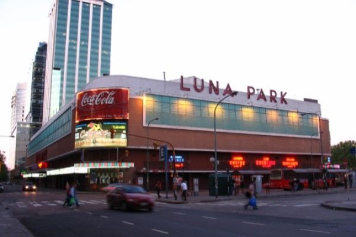
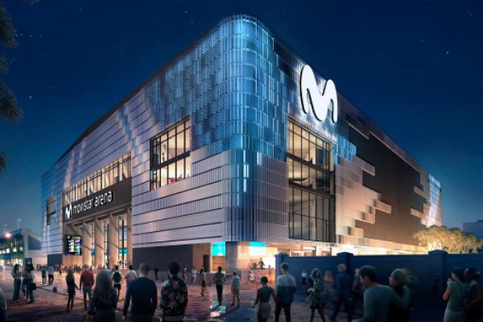
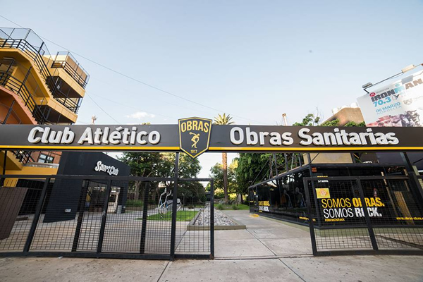

Nosotros Nosotros Nosotros Nosotros Nosotros Nosotros Nosotros Nosotros Nosotros Nosotros Nosotros Nosotros Nosotros Nosotros Nosotros Nosotros Nosotros Nosotros Nosotros Nosotros Nosotros
Registro Registro Registro Registro Registro Registro Registro Registro Registro Registro Registro Registro Registro Registro Registro Registro Registro Registro Registro Registro Registro
Eventos Eventos Eventos Eventos Eventos Eventos Eventos Eventos Eventos Eventos Eventos Eventos Eventos Eventos Eventos Eventos Eventos Eventos Eventos Eventos Eventos Eventos Eventos Eventos
Contacto Contacto Contacto Contacto Contacto Contacto Contacto Contacto Contacto Contacto Contacto Contacto Contacto Contacto Contacto Contacto Contacto Contacto Contacto Contacto Contacto
Reseñas de Estadios
Luna Park

El Luna Park es un tradicional estadio cubierto de Buenos Aires, Argentina,
donde se realizan actividades artísticas y deportivas,
fundado por Ismael Pace y José Lectoure en 1931.
Antes, había funcionado donde hoy se levanta el Obelisco de Buenos Aires.
Movistar Arena

Movistar Arena es un miniestadio cubierto para eventos artísticos, musicales,
culturales y deportivos situado en el barrio de Villa Crespo de Buenos Aires,
Argentina con capacidad para 15 000 personas.
Estadio Obras

El Estadio Obras Sanitarias, inaugurado en junio de 1978,
es el estadio del Club Atlético Obras Sanitarias de la Nación,
club fundado el 27 de mayo de 1917 por un grupo de trabajadores
de la empresa pública Obras Sanitarias de la Nación de Argentina.